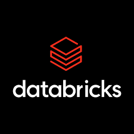
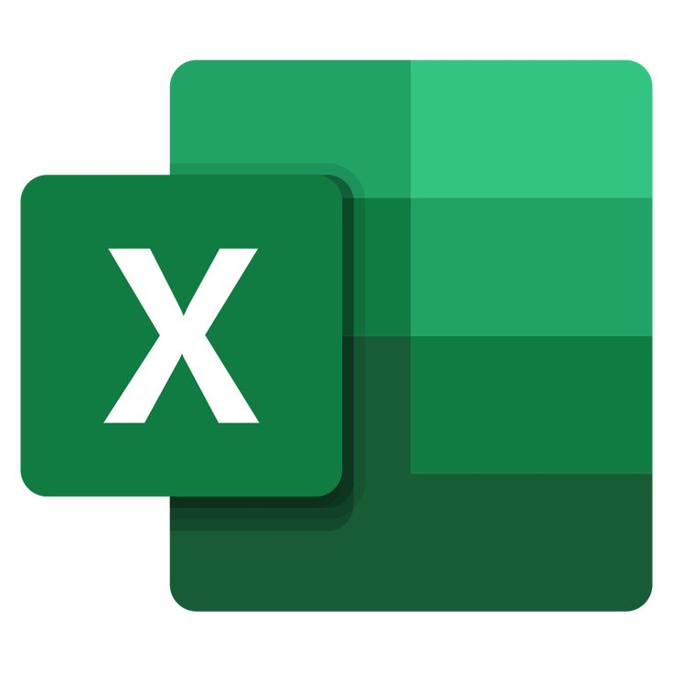

Skills
- Languages: Python, SQL
- Libraries & Frameworks: Pandas, NumPy, Matplotlib, Seaborn, Scikit-learn
- Big Data Tools: PySpark, Databricks
- Data Platforms: Data Warehouse, Data Lake, Data Lakehouse
- Visualization: Power BI, MS Excel
- Deployment & APIs: Flask, REST API


